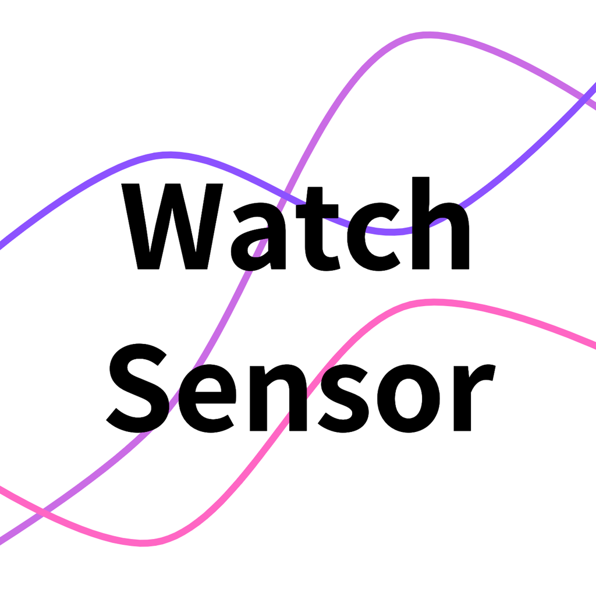

Watch Senosor Logger
Apple watchに搭載されたセンサーで計測したデータを取得できます。
取得できるデータ
・時間（データの計測された時刻）
・加速度
・角加速度
・重力加速度
・姿勢（attitude）
・GPS（lattitude, longitude）


何か不明な点がございましたらお問い合わせください。 e-mail:kanbe5631@gmail.com